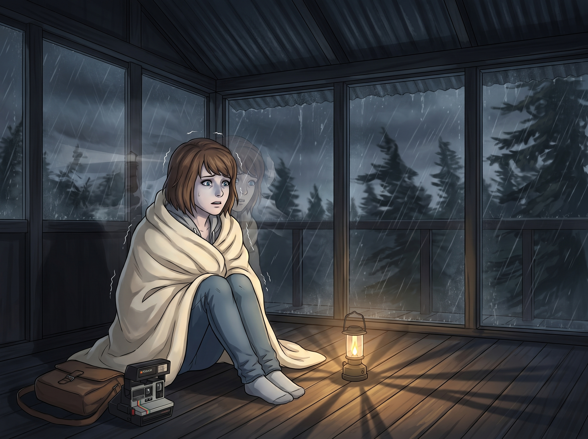

暴風雨夜

普吉特海灣的十月，迎來了第一場真正的太平洋風暴。狂風撕扯著松林，暴雨像碎石一樣密集地砸在 2.0 海盜瞭望塔的金屬頂棚與鋼化玻璃上。
塔內沒有開主燈，只有一盞昏黃的露營燈在地板上搖曳。
Max 蜷縮在 Victoria 偷偷放進來的那條純羊絨毛毯裡，渾身不受控制地發抖。對她而言，這種級別的風暴聲與氣壓驟降，是足以瞬間將她拉回阿卡迪亞灣燈塔懸崖邊的終極觸發點。
一、無法消失的創傷
PTSD 從來不是靠大喊一聲我已經足夠堅強就能克服的廉價電影橋段。創傷是刻在神經元裡的物理反射。當狂風發出某種特定的呼嘯時，Max 的大腦依然會向她瘋狂報警：龍捲風來了，妳要做出那個撕裂宇宙的選擇了。
Chloe 沒有說那些「別怕，有我在」的廢話。她太清楚創傷的重量。
她只是安靜地坐在 Max 身後，用雙臂從背後緊緊環抱住這個顫抖的女孩，讓自己的下巴抵在 Max 的頭頂，用自己溫熱、沉穩的心跳聲，一點一點地去覆蓋 Max 耳膜裡那場虛幻的龍捲風。
「我以為……」Max 埋在 Chloe 的懷裡，聲音沙啞得幾乎被雨聲淹沒，「我以為我們建好了這座塔，釘完了最後一塊木板，我就可以不再害怕了。我以為這是某種儀式，做完了，我們的心魔就會消失。」
「這就是創傷最操蛋的地方，Max。」Chloe 的聲音在昏暗的塔內響起，帶著一種疲憊卻通透的平靜，「它不會消失。我們建這座塔，不是為了把 PTSD 關在門外，而是為了當我們崩潰的時候，至少不用再淋著雨。」
二、撕裂成兩半的靈魂
Chloe 伸出一隻帶著機油洗不淨痕跡的手，輕輕握住了 Max 冰涼的手指。這座塔，這個暴風雨夜，終於將她們內心最隱秘、最不敢觸碰的那個黑色死結逼了出來。
「妳知道我最害怕什麼嗎？」Chloe 看著窗外被閃電照亮的漆黑海面，緩緩說道，「在很長一段時間裡，我的腦子裡同時住著兩個截然不同的 Maxine Caulfield，而這兩個妳，幾乎把我的靈魂撕成了兩半。」
Max 的身體僵了一下，她沒有回頭，只是把 Chloe 的手握得更緊了。
「第一個妳，是那個在我十三歲、我爸剛死、我的世界徹底坍塌時，一聲不吭搬去西雅圖，整整五年沒有回我一條簡訊的懦夫。」Chloe 的語氣裡沒有指責，只有一種剝開傷口般的殘酷坦誠，「那種被拋棄的創傷，讓我覺得自己是個被詛咒的垃圾。我覺得我不值得被愛，不值得被留下來。」
閃電再次劃破夜空，照亮了 Chloe 臉上那顆為了掩蓋傷疤而刺下的淚滴紋身。
「但第二個妳……」Chloe 的聲音突然哽咽了，她把臉深深埋進 Max 的頸窩，「是那個為了救我，不惜無數次逆轉時間，流著鼻血、大腦超載、承受著時空反噬的痛楚，甚至……甚至做好了讓整個阿卡迪亞灣和所有人給我們陪葬準備的瘋子。」
這就是 Chloe 面對的、常人無法想像的多重創傷疊加態。
她同時背負著失去父親的痛、被摯友拋棄的恨，以及最致命的——沉重到令人窒息的倖存者內疚。即便在這個雙保結局裡，小鎮奇蹟般地沒有徹底毀滅，但 Chloe 永遠記得，Max 在懸崖邊撕碎那張蝴蝶照片時，是以犧牲一切為籌碼的。
「Max……」Chloe 的眼淚終於溫熱地砸在了 Max 的頸側，「妳要我怎麼消化這種落差？妳用五年的時間讓我相信我是個可以被隨便拋棄的廢物，然後又用一個星期的時間告訴我，我的命比這個世界的物理法則、比整個小鎮幾千條人命還要重要。這份愛太重了。重到我每天早上醒來，都覺得自己是個偷了別人時間的小偷。」
三、不是英雄的自白
這種沉重的告白，無法用任何一句單薄的「我愛妳」來化解。
Max 終於轉過身。在微弱的露營燈光下，她捧起 Chloe 的臉，用拇指輕輕擦去那些混雜著愧疚與恐懼的眼淚。Max 沒有試圖去粉飾太平，她選擇了交出自己最不堪的一面。
「Chloe，我撕碎那張照片，不是因為我勇敢，也不是因為我足夠強大去承擔神明的責任。」Max 的眼神裡透著一種經歷過無數次死亡輪迴後的哀傷與決絕，「我做那個選擇，是因為我極度自私，且極度懦弱。」
「懦弱？」
「對。因為在那個沒有妳的平行時間線裡，我試過了。」Max 的聲音輕得像一陣風，卻重重地砸在 Chloe 的心上，「我看到了妳在輪椅上要求我結束妳生命的世界；我也看到了妳倒在女廁所冰冷磁磚上的世界。那種痛，比一千場龍捲風還要可怕。我意識到，如果沒有妳，我這輩子都只會是一具在暗房裡洗照片的行屍走肉。」
Max 直視著 Chloe 泛紅的眼睛，語氣無比堅定：「我不是為了拯救世界而存在的英雄。我只是一個因為無法忍受失去妳的痛苦，而選擇拉著整個世界陪葬的自私鬼。所以，不要覺得妳欠了這個世界什麼。如果有罪，那也是我 Maxine Caulfield 一個人擔著。」
四、沒有痊癒，但不再獨自淋雨
暴風雨依然在塔外肆虐，狂風吹得鋼架發出低沉的嗡鳴。但塔內的空氣，卻在這一刻徹底沉澱了下來。
那些糾纏了她們多年的幽靈：William 的車禍、西雅圖的五年、燈塔懸崖邊的風暴，依然存在。創傷沒有因為這番對話而奇蹟般地痊癒，PTSD 依然會在下一次雷打響時讓她們心跳加速。
但有什麼東西不一樣了。
Chloe 嘆了口氣，嘴角勾起一抹帶著淚水的、專屬於她的痞笑。她伸出手，把 Max 重新裹進那條昂貴的羊絨毯裡，然後與她並肩靠在粗糙的防腐木牆上。
「兩個自私的懦夫，一對搞砸了時間線的神經病。」Chloe 拿起手邊的保溫瓶，喝了一口 Kate 熬的熱蘋果酒，「聽起來，我們還真是天造地設的一對。」
「是啊。」Max 將頭輕輕靠在 Chloe 的肩膀上，聽著外面的風暴聲，身體終於不再顫抖，「既然都是神經病了，那下半輩子，就只能互相綁死，誰也別想再跑了。」
在這座名為創傷庇護所的 2.0 海盜瞭望塔裡，風暴依然在繼續，但她們終於學會了，如何帶著滿身的傷痕，在同一個屋簷下，安靜地聽完一場雨。